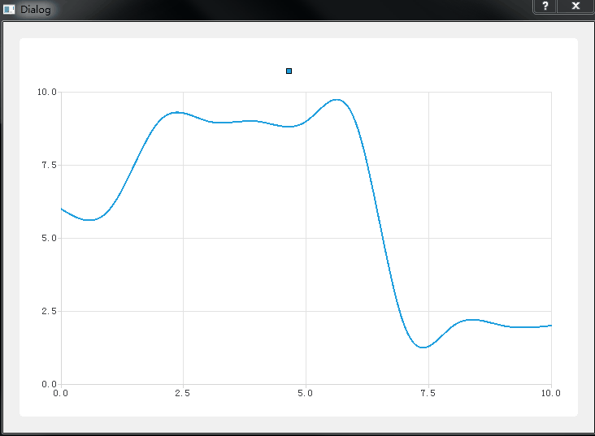

1、添加坐标轴
按照之前的一篇笔记,先在工程中添加QChart、QChartView，代码如下：
Dialog::Dialog(QWidget *parent) :
QDialog(parent),
ui(new Ui::Dialog)
{
ui->setupUi(this);
chart = new QChart();
ChartView = new QChartView(this);
ChartView->setChart(chart);
ui->verticalLayout->addWidget(ChartView);
}
然后定义两个坐标轴，一个用作X轴，一个用作Y轴， 添加头文件：
#include <QtCharts/QValueAxis>
创建两个QValueAxis：
QValueAxis *axisX;
QValueAxis *axisY;
在构造函数中，对两个坐标轴进行实例化，把X轴范围设置为0-10并放置在坐标系的底部，Y轴范围设置为0-10并放置在坐标系的左边，并且添加到QChart中，如下：
Dialog::Dialog(QWidget *parent) :
QDialog(parent),
ui(new Ui::Dialog)
{
ui->setupUi(this);
chart = new QChart();
axisX = new QValueAxis();
axisY = new QValueAxis();
chart->addAxis(axisX,Qt::AlignBottom);
chart->addAxis(axisY,Qt::AlignLeft);
axisX->setTickCount(5);
axisX->setRange(0, 10);
axisY->setRange(0, 10);
ChartView = new QChartView(this);
ChartView->setChart(chart);
ui->verticalLayout->addWidget(ChartView);
}
编译运行，结果如下：
从上图可以看出，成功创建了一个笛卡尔坐标系。
2、使用定时器动态添加数据
这里尝试下使用曲线图，创建一个曲线序列，
- 添加头文件
#include <QtCharts/QSplineSeries>
- 在类声明中添加：
QSplineSeries *series;
- 在构造函数中对series进行实例化，并跟之前创建的坐标轴关联起来：
series = new QSplineSeries(this);
series->attachAxis(axisX);
series->attachAxis(axisY);
然后添加定时器：
Dialog::Dialog(QWidget *parent) :
QDialog(parent),
ui(new Ui::Dialog)
{
.....
QTimer timer;
connect(&timer, &QTimer::timeout, this, &Chart::Timeout_handler);
timer.setInterval(1000);
}
void Dialog::Timeout_handler()
{
}
首先定义一个整形变量x_index，初始化为0，用来给series序列中的x赋值，定时器每触发一个事件，使用随机数生成函数生成的值给series序列中的y赋值,然后x_index的值加一,主要代码如下：
void Dialog::Timeout_handler()
{
QDateTime dt;
QString current_dt = dt.currentDateTime().toString("yyyy:MM:dd:hh:mm:ss:zzz");
qsrand(dt.currentDateTime().toTime_t());
int y = qrand() % 10;
series->append(x_index,y);
x_index ++;
qDebug()<<"x_index:"<<x_index;
}
运行结果如下：

从上图中可以看到曲线是动起来了，可是当x_index大于10的时候，曲线就没有动了，也就是时序列series第10个及后面数据都没有显示出来，
3、实现实时曲线
因为之前X轴范围为0-10，能显示的数据也就只有x值在0-10范围内，超过10的就无法显示，那如果要显示实时更新的数据，该怎么操作呢？
1. 一个方法是当序列series中的数据增加时，X轴范围也增加，代码如下：
void Dialog::Timeout_handler()
{
QDateTime dt;
QString current_dt = dt.currentDateTime().toString("yyyy:MM:dd:hh:mm:ss:zzz");
qsrand(dt.currentDateTime().toTime_t());
int y = qrand() % 10;
series->append(x_index,y);
if(x_index > 10)
axisX->setRange(0, x_index);
x_index ++;
}
当x_index超过10后，每增加一个，就把x轴显示范围设置为0-x_inxex,显示效果如下：
2. 还是改变x轴的，不过，可现实区域是固定的
void Dialog::Timeout_handler()
{
QDateTime dt;
QString current_dt = dt.currentDateTime().toString("yyyy:MM:dd:hh:mm:ss:zzz");
qsrand(dt.currentDateTime().toTime_t());
int y = qrand() % 10;
series->append(x_index,y);
if(x_index > 10)
axisX->setRange(x_index-10, x_index);
x_index ++;
}
3. 使用scroll方法
代码如下：
void Dialog::Timeout_handler()
{
QDateTime dt;
QString current_dt = dt.currentDateTime().toString("yyyy:MM:dd:hh:mm:ss:zzz");
qsrand(dt.currentDateTime().toTime_t());
int y = qrand() % 10;
series->append(x_index,y);
qreal x = chart->plotArea().width() / 10;
if(x_index > 10)
chart->scroll(x,0);
x_index ++;
}
4. 更新全部serial
这种方法是保持序列series的x轴的值不变，都是0-10，改变的是0-10对应的y轴的值，首先定义一个list用来保存获取到的Y轴的值：
QList<int> y_list;
void Dialog::Timeout_handler()
{
QDateTime dt;
QString current_dt = dt.currentDateTime().toString("yyyy:MM:dd:hh:mm:ss:zzz");
qsrand(dt.currentDateTime().toTime_t());
int y = qrand() % 10;
y_list.append(y);
if(y_list.length()>11)
y_list.removeFirst();
QList<QPointF> points;
points.clear();
for(int i=0;i<y_list.length();i++)
{
points.append(QPointF(i,y_list.at(i)));
}
series->replace(points);
}
效果如下：

上图中可以看到，图标中的曲线一直在变化，可是X轴的范围保持在0-10，